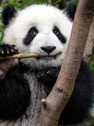

The giant panda (Ailuropoda melanoleuca), also known as the panda bear or simply panda, is a bear species endemic to China. It is characterised by its white coat with black patches around the eyes, ears, legs and shoulders. Its body is rotund; adult individuals weigh 100 to 115 kg (220 to 254 lb) and are typically 1.2 to 1.9 m (3 ft 11 in to 6 ft 3 in) long. It is sexually dimorphic, with males being typically 10 to 20% larger than females. A thumb is visible on its forepaw, which helps in holding bamboo in place for feeding. It has large molar teeth and expanded temporal fossa to meet its dietary requirements. It can digest starch and is mostly herbivorous with a diet consisting almost entirely of bamboo and bamboo shoots.

The giant panda lives exclusively in six montane regions in a few Chinese provinces at elevations of up to 3,000 m (9,800 ft). It is solitary and gathers only in mating seasons. It relies on olfactory communication to communicate and uses scent marks as chemical cues and on landmarks like rocks or trees. Females rear cubs for an average of 18 to 24 months. The oldest known giant panda was 38 years old.
| Species | Est. Population |
|---|---|
| Giant Panda | 2,000 |
| Red Panda | 10,000 |
| Sichuan Panda | 1,800 |
| Qinling Panda | 300 |